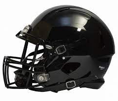
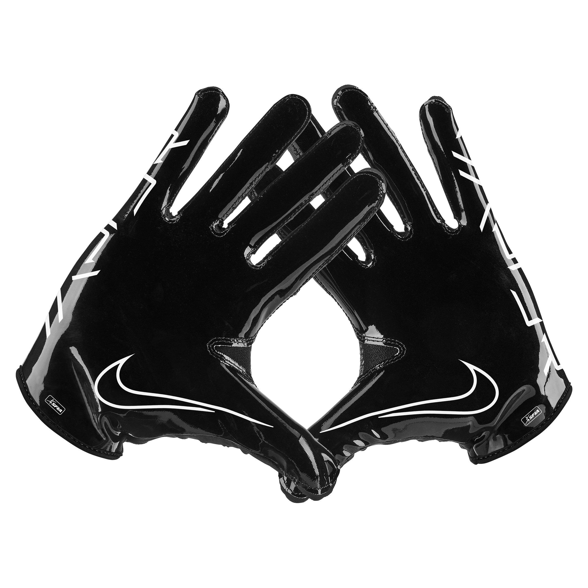
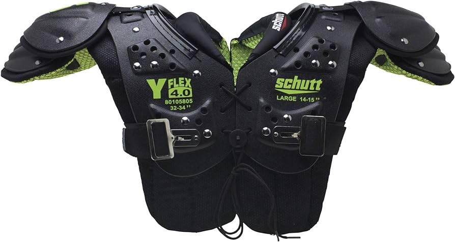
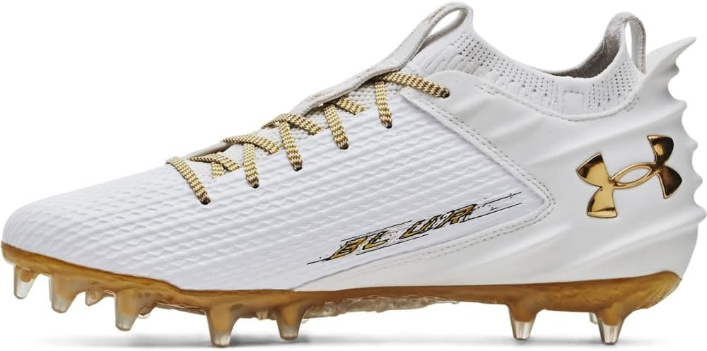

Football Helmet

The inside of the helmet if filled with padding to limit the force the brain feels.
This protects the players against skull fracture, severe traumatic
brain injury and death.
Football Gloves

There are many benefits to wearing gloves.
They provide extra grip,
making it easier to catch the ball.
They also protect against field burns.
Football Pads

Football pads have many different
purposes. They regualte players' body
temperature and protect
them against injury. The pads
work by spreading the force
of a hit so that it's absorbed
over a larger area.
Football Cleats

Football cleats provide durability,
movement and protection. The little
spikes under the cleat grip
the ground and provide more traction.
The cleats have a stiffer outer sole
and can withstand repeated
impact with the ground.